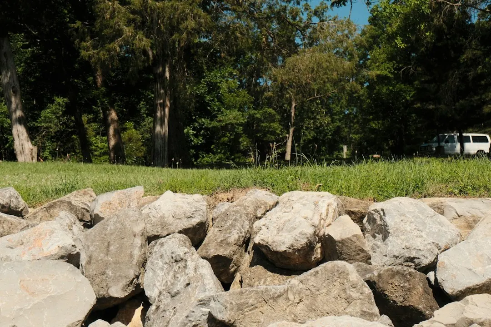

For homeowners comparing retaining wall builders armadale options, the practical decision starts with the block's slope, wall height, soil, access and the load carried above it.
Retaining Wall Builders Armadale Explained
The published guidance from Retaining Wall Armadale treats the block as the starting point for choosing a wall. A wall holding back soil on a sloping site has different demands from a low boundary wall between levelled lots. Before comparing finishes, note the approximate length and height, the steepness of the ground, and whether a driveway, shed, pool or water tank sits near the top.
Local conditions can change the work involved. Roleystone, Bedfordale, Kelmscott and Mount Nasura are described as hillside locations where walls may be taller and access tighter. Piara Waters, Harrisdale, Haynes and Hilbert are described as newer plains estates where lower walls may sit between levelled lots or along boundaries. These are useful starting scenarios, not substitutes for a site inspection.
- Record the wall's approximate height and length.
- Photograph the slope, boundary, access route and nearby structures.
- Note visible leaning, cracking, bulging or water collecting behind an existing wall.
Match the wall system to height and ground
Limestone, concrete sleeper and block systems each suit different combinations of height, soil, appearance and drainage. Limestone may suit an Armadale home where a block finish fits the setting. Concrete sleepers on steel posts provide a slim, low-maintenance option and may be considered when replacing an old timber wall. Besser, interlocking and segmental blocks can be matched to the wall height, load and drainage arrangement.
There is no useful universal answer to which system is cheapest. A simple wall that does not suit the soil or the load above it can create extra footing, drainage or engineering work. For a low garden wall on a flatter block, a simpler system may be adequate after the site is checked. A taller wall on a slope needs a more careful comparison of footing requirements, access, drainage and the material's suitability.
Ask for the proposed system to be named in writing, together with its height, length, finish and any assumptions about excavation or soil conditions. That makes it easier to compare like with like.
Drainage is part of the wall design
Water behind a retaining wall needs a planned path out. The published service notes identify ag pipe, aggregate, geofabric and discharge points as parts of a drainage arrangement. When reviewing a quote, ask where the pipe will sit, what aggregate and geofabric are proposed, and where water will discharge. A wall design that lists only the visible face can leave important work unclear.
Drainage questions become particularly important on sloping blocks, where water may move downhill towards the wall. They also matter when replacing an old timber wall or investigating a wall that is leaning, cracked or bulging. A contractor may recommend a drainage fix, a partial rebuild or replacement, depending on the condition and cause.
Do not assume that adding a new face solves an underlying drainage problem. Request photographs or a written description of the existing condition, the proposed repair area and how water will be managed after the work.
Check boundaries, loads and approvals early
Height, boundary position and loads above the wall can affect whether approval or engineering needs to be considered. The local guidance recommends checking City of Armadale building information before committing to a design, especially for taller walls, boundary walls or walls supporting a driveway, shed or water tank.
An engineer or soil report may be relevant where the site is steep, the wall is tall, or the load above is significant. The need should be confirmed for the particular design rather than guessed from a suburb name. Ask who is responsible for obtaining any required approval, supplying engineering documents and including those costs in the written quote.
For a boundary project, clarify the exact position of the wall and how excavation, access and finished levels will be handled. These details can affect neighbours, site access and the final amount of earth to be removed.
Use the quote to compare the real scope
A useful written quote should make the physical scope visible. The published checklist recommends identifying wall type, height and length, footings, drainage, site access, soil removal and any engineering or approval costs. It is also sensible to ask what is excluded, how changes will be priced and whether the quote assumes clear access or particular soil conditions.
Send the suburb, approximate dimensions, photographs and any plans with the enquiry. Mention whether the project is a new wall, a replacement, a repair or part of a new build. If you are comparing local information, the separate guide to retaining wall services in Armadale provides another service-focused starting point.
Before work begins, confirm the selected material, drainage arrangement, finished height, access plan and responsibility for approvals. A clear record helps reveal whether two quotes describe the same job.
- Inspect the block. Estimate the wall length and height, photograph the slope and access, and note structures or loads above.
- Shortlist systems. Compare limestone, concrete sleeper and block options against the height, soil, appearance and drainage needs.
- Check requirements. Review City of Armadale building guidance and ask whether engineering, a soil report or approval applies.
- Request written scope. Send dimensions, suburb, photos and project type, then compare footings, drainage, removal, access and exclusions.
| Site scenario | Questions to resolve | Likely quote focus |
|---|---|---|
| Hillside block | How steep is the ground, and can materials reach the work area? | Access, excavation, footings, drainage and possible engineering |
| Plains or levelled lot | Is the wall between lots or along a boundary, and what soil is present? | Wall height, boundary position, footing work and discharge point |
| Existing damaged wall | Is it leaning, cracked or bulging, and is water collecting behind it? | Drainage repair, section rebuild or full replacement |
| Wall below a load | Does a driveway, shed, pool or water tank sit above it? | Load assessment, engineering, wall system and approval checks |
This guide covers site assessment, wall selection, drainage, approval questions and written quote comparisons for retaining wall projects in Armadale and nearby areas.